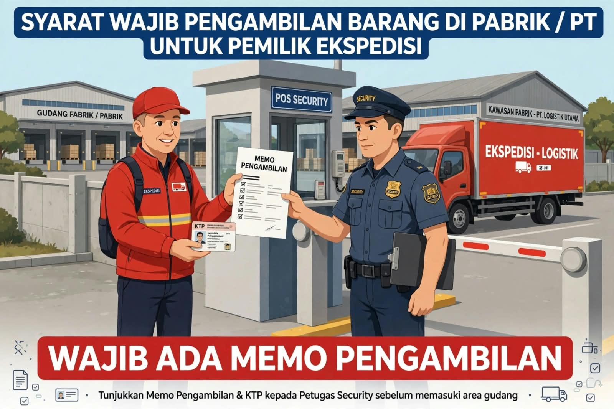

Syarat Wajib Pengambilan Barang di Pabrik / PT, Pemilik Ekspedisi Wajib Tau

Banyak pemilik ekspedisi dan agen yang masih bingung: apa saja syarat wajib pengambilan barang di pabrik atau PT? Padahal, satu dokumen yang tertinggal saja bisa membuat kurir ditahan security, barang gagal diambil, bahkan ekspedisi terseret masalah hukum.
Pengalaman kami di Lion Parcel Bandung POS101 Nanjungmekar Rancaekek membuktikan, pabrik sebesar apapun, dari Kahatex sampai pabrik di kawasan Cicalengka, semuanya menerapkan aturan yang sama: tanpa memo pengambilan, tidak ada barang yang boleh keluar. Bahkan untuk kain 1 gulung saja, pelanggan wajib memberikan memo.
Artikel ini merangkum syarat wajib yang harus dimiliki ekspedisi sebelum menjemput barang ke pabrik / PT, lengkap dengan perbedaan memo dan surat jalan, serta ciri-ciri modus penipuan pick up yang sedang marak.
Mau Pick Up Barang dari Pabrik? Tanya Dulu Syaratnya via WA
Kirim foto barang, lokasi pabrik, dan memo pengambilannya. Kami bantu cek apakah sudah lengkap dan bisa dijemput hari ini.
💬 Chat WhatsApp 0851-8309-04861. Memo Pengambilan: Dokumen Paling Wajib
Memo pengambilan, atau sering disebut surat pengambilan, surat tugas pengambilan, atau Delivery Order (DO), adalah surat izin resmi dari pemilik barang atau pihak pabrik yang menyatakan bahwa kurir tertentu boleh mengambil barang tertentu.
Tanpa memo, security pabrik tidak akan membukakan gerbang. Ini bukan soal ekspedisi ribet, tapi soal keamanan aset pabrik.
Isi memo pengambilan yang benar:
- Nama PT / pabrik asal barang: contoh PT Kahatex, PT Panfila, dll.
- Nama dan jenis barang: contoh kain 1 gulung, mesin camera UV 1 set, 2 koli peti kayu.
- Jumlah koli dan berat: jangan hanya tulis "1 paket". Tulis detailnya.
- Nama kurir / ekspedisi yang ditugaskan: contoh Lion Parcel POS101, nama kurir, nomor HP kurir.
- Nomor plat kendaraan: untuk kendaraan yang masuk ke area pabrik.
- Tanggal pengambilan: memo hanya berlaku di tanggal tersebut.
- Nama, tanda tangan, dan stempel pemberi memo: dari pemilik barang atau admin gudang.
Kalau ada pelanggan yang bilang "ambil aja dulu, memo nyusul", "percaya aja, saya orang dalam", atau "nanti saya buatkan surat jalan", itu tanda bahaya. Tolak dengan sopan.
2. Identitas Kurir dan Kendaraan Harus Jelas
Selain memo, kurir yang datang ke pabrik wajib membawa identitas yang sesuai dengan nama di memo.
- KTP asli kurir: akan difotokopi / difoto oleh security.
- Seragam / ID card ekspedisi: untuk membedakan kurir resmi dan orang asing.
- STNK dan nomor plat: harus sama dengan yang tertulis di memo.
- Surat tugas dari ekspedisi: jika pengambilan barang bernilai tinggi, bawalah surat tugas tambahan dari agen.
Di Lion Parcel Bandung POS101, kami tidak pernah mengirim kurir tanpa identitas lengkap. Ini melindungi kurir kami dan juga melindungi pabrik dari pencurian berkedok pengambilan barang.
3. Nama PIC Gudang dan Kontak yang Bisa Dihubungi
PIC adalah Person In Charge, yaitu orang di gudang pabrik yang bertanggung jawab mengeluarkan barang. Sebelum kurir berangkat, ekspedisi wajib mengantongi:
- Nama PIC gudang: bukan hanya nama "pak bos" atau nama pengirim di WA.
- Nomor HP PIC yang aktif: yang bisa dihubungi security untuk konfirmasi.
- Lokasi gudang yang spesifik: gudang 1, gudang 2, gudang bahan baku, dll.
- Jam operasional pengambilan: sebagian pabrik hanya melayani pengambilan jam 08.00 - 16.00 WIB.
Jika pelanggan tidak bisa memberikan nama PIC dan nomornya, kemungkinan besar dia bukan pemilik barang dan bukan orang dalam pabrik. Jangan paksakan pengambilan.
📍 Lokasi Lion Parcel Bandung POS101 Nanjungmekar
Jl. Raya Barat Cicalengka RT 1 RW 1, Nanjung Mekar, Rancaekek, Kabupaten Bandung, Jawa Barat.
4. Detail Barang: Foto, Ukuran, dan Berat Wajib Ada
Untuk pengambilan barang besar seperti mesin, ekspedisi wajib tahu detail barang sebelum berangkat. Tujuannya agar bisa menyiapkan armada yang tepat dan tidak salah hitung ongkir.
- Foto barang sebelum packing dan sesudah packing: foto harus di lokasi pabrik, bukan foto dari Google.
- Ukuran per koli (P x L x T): contoh peti kayu 120 x 100 x 80 cm.
- Berat per koli: mesin camera UV tipe 6090 yang dipacking peti kayu bisa 150 - 250 kg per koli.
- Jumlah koli: contoh 2 koli, peti No. 1 dan peti No. 2.
- Kebutuhan khusus: apakah butuh forklift, packing kayu tambahan, atau truk CDD?
Barang 300 kg tidak bisa diangkut dengan motor atau pickup biasa. Jika pelanggan tidak bisa menyebutkan ukuran dan beratnya dengan pasti, patut dicurigai dia hanya meneruskan foto orang lain.
5. Bedakan Memo Pengambilan dan Surat Jalan, Jangan Tertukar
Ini kesalahan yang paling sering dipakai penipu untuk mengelabui pemilik ekspedisi.
Memo Pengambilan = Untuk Masuk dan Mengambil
Dibuat sebelum barang diambil. Fungsinya sebagai izin masuk ke pabrik. Ditunjukkan ke security. Yang membuat adalah pemilik barang atau admin gudang.
Surat Jalan = Untuk Membawa Barang di Jalan
Dibuat sesudah barang diambil, saat barang mau keluar dari pabrik. Fungsinya sebagai bukti bahwa barang resmi keluar dari pabrik. Dibawa kurir untuk jaga-jaga kalau ada razia di jalan. Yang membuat adalah pihak PT / gudang yang mengeluarkan barang.
Jadi, kalimat "pakai surat jalan saja bisa pak" itu tidak masuk akal. Bagaimana mau dapat surat jalan kalau masuk pabrik saja belum bisa karena tidak ada memo? Memo itu seperti surat izin masuk untuk menjemput, sedangkan surat jalan itu seperti surat izin pulang setelah barang dijemput.
6. Ciri-Ciri Modus Penipuan Pick Up Barang di Pabrik
Waspada jika pelanggan baru menunjukkan ciri-ciri berikut:
- Tidak bisa memberikan memo berhari-hari: alasannya selalu "besok", "belum siap", "cancel dulu", tapi besoknya tanya lagi "bisa jemput hari ini?"
- Tidak punya bukti kepemilikan: tidak ada invoice pembelian, tidak ada foto mesin di lokasi, tidak ada kwitansi.
- Meminta pengambilan mendadak dan buru-buru: "jemput sekarang ya", "jam 1 harus sudah sampai", agar ekspedisi tidak sempat verifikasi.
- Barang bernilai tinggi tapi prosedurnya longgar: mesin puluhan juta, tapi disuruh ambil modal percaya saja.
- Hanya kirim foto dari internet: foto tidak ada logo pabrik, tidak ada nama PT, tidak ada seragam pabrik.
- Nomor HP tidak jelas dan ganti-ganti: tidak mau video call, tidak mau datang ke agen.
Jika menemukan ciri-ciri tersebut, jangan ragu menolak. Menolak satu order yang mencurigakan jauh lebih baik daripada menanggung kerugian puluhan juta dan masalah hukum.
7. Contoh Cara Menolak Pick Up Tanpa Memo yang Aman
Menolak tidak harus dengan tuduhan. Cukup dengan alasan SOP, agar ekspedisi terlihat profesional dan aman secara bukti chat.
"Maaf pak, kami tidak sanggup ambil barangnya ya pak. Karena memo pengambilannya dari kemarin belum ada, dan SOP kami wajib ada memo untuk ambil ke pabrik. Bapak bisa hubungi ekspedisi lain aja ya pak, terima kasih."
Setelah mengirim penolakan, simpan semua screenshot chat sebagai bukti, jangan hapus chat, dan jangan ladeni lagi jika pelanggan memaksa. Jika pelanggan marah setelah ditolak halus, itu justru membuktikan niatnya memang tidak benar.
Kesimpulan
Syarat wajib pengambilan barang di pabrik / PT itu sederhana tapi tidak bisa ditawar: 1) Ada memo pengambilan, 2) Ada identitas kurir yang sesuai, 3) Ada nama PIC gudang yang bisa dihubungi, 4) Ada detail barang, foto, ukuran, dan berat yang jelas. Tanpa keempatnya, ekspedisi berhak dan wajib menolak.
Pengalaman di kawasan industri Rancaekek - Cicalengka membuktikan, pabrik yang tertib seperti Kahatex saja selalu memberikan memo walau hanya untuk kain 1 gulung. Apalagi untuk mesin bernilai puluhan juta. Jika ada yang minta diambil tanpa memo, itu bukan rezeki, itu jebakan.
Untuk pelanggan yang ingin kirim barang dari pabrik di wilayah Rancaekek, Cicalengka, dan Bandung Timur, silakan hubungi kami terlebih dahulu dan siapkan memo pengambilannya. Kami siap bantu jemput dengan aman dan sesuai SOP.
Nama Agen: Lion Parcel Bandung POS101 Nanjungmekar Rancaekek
Jam Operasional: Senin–Minggu, 08.00–20.00 WIB
Alamat: Jl. Raya Barat Cicalengka RT 1 RW 1, Nanjung Mekar, Rancaekek, Kabupaten Bandung
WhatsApp: 0851-8309-0486